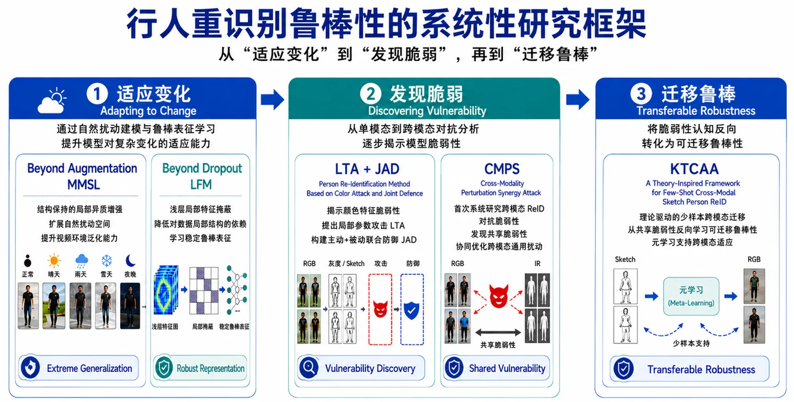

01
鲁棒视觉智能 · 跨模态 ReID 与 AI 安全Robust Visual Intelligence · Cross-Modal ReID & AI Security
以跨模态 ReID 为主要载体，从数据不变性、表征不变性进一步推进至任务不变性，围绕“适应变化—发现脆弱—迁移鲁棒”系统研究极端场景泛化、鲁棒表征、跨模态共享脆弱性与少样本知识迁移。
Using cross-modal person re-identification as a primary testbed, this line moves from data and representation invariance toward task invariance, studying extreme-condition generalization, robust representation, shared cross-modal vulnerabilities, and few-shot knowledge transfer.
